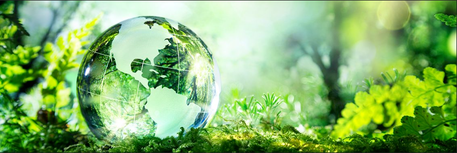

- 

Qual é a importância da preservação ambiental?
A resposta é simples; se esse planeta acabar onde viveremos? O crescimento descontrolado da população força-nos a buscar mais recursos e espaço e neste processo invadimos áreas onde antes as florestas permaneciam intocadas. Mas não são somente as florestas que devemos preservar. Criamos um mito das florestas e principalmente da floresta amazônica como o pulmão do mundo, entretanto três quartos do planeta são cobertos pelos oceanos e neles a presença do fitoplâncton é o verdadeiro responsável pelo nosso ar capturando a maior parte do CO2 da atmosfera e liberando o oxigênio.
O consumo sempre crescente está acabando com a Terra, nossos recursos são finitos e lidamos como se fossem intermináveis. Ar e água doce são recursos cada vez mais limitados. Nosso planeta tem quase treze mil quilômetros de diâmetro, mas se pensarmos que a quantidade de ar que temos para respirar está na altura máxima de seis quilômetros dos cerca de cem quilômetros de altitude de nossa atmosfera. Da mesma maneira, se considerarmos que 75% da superfície terrestre é coberta de água, mas de apesar do número absurdo de litros de água em nosso planeta, aproximadamente um sextilhão duzentos e sessenta quintilhões de litros (1.260.000.000.000.000.000.000 litros), somente entre dois e três por cento desse total é água doce, fundamental para a vida. É assustador a imaginar a pegada hídrica que um simples quilo de carne bovina acumula: Quase quinze mil e quinhentos litros de água por quilo. Um simples copo de Chopp custam incríveis setenta e cinco litros de água potável para ser produzido. A vida como conhecemos é impossível sem ar e água. Em nosso sistema solar somente três planetas estão na chamada zona habitável onde pode existir água em estado líquido fundamental para a existência da vida e desses três, somente a Terra tem condições de prover vida. Mas a questão é: Por quanto tempo?